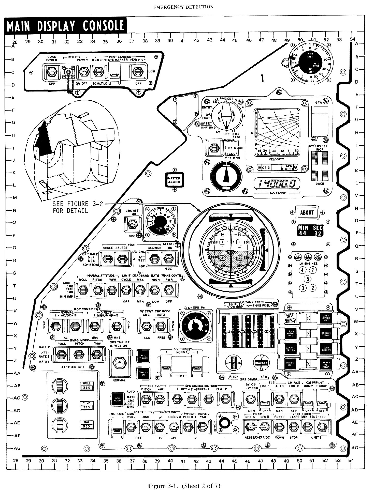

A cross-platform video editor with an immediate-mode interface.

From the Blick blogDon’t throw it all away.
Don’t throw it all away.
Caching an immediate-mode UI
How the UI Painter reuses rendered pixels behind an immediate-mode UI, and what that means for power use.
Read article ↗- A compute-driven, tiled renderer that evaluates signed distance fields on the GPU.
- A small rendering language interpreted in the shader, keeping CPU-side rendering logic minimal.
- Rendering caches that reuse unchanged output, with energy efficiency as a design goal.